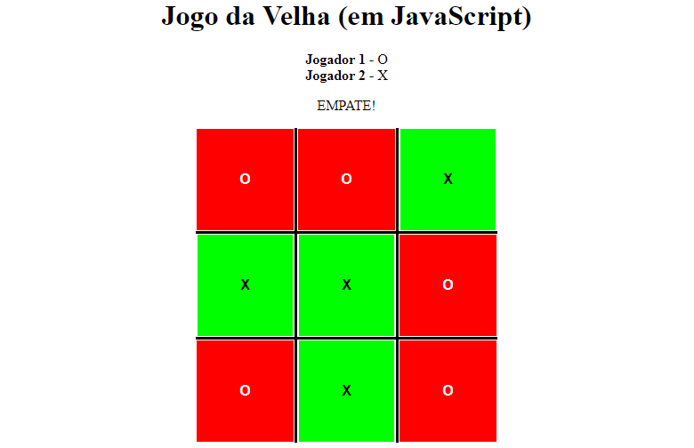

TCC - Sistema de Controle de Ponto

O Sistema de Controle de Ponto foi desenvolvido como exigência para conclusão de graduação do
curso de Sistemas para Internet da FATEC Jahu. O objetivo deste trabalho foi desenvolver um
sistema de controle de ponto de funcionários e professores, esperando-se corrigir erros e
substituir o sistema obsoleto.
LER TRABALHO COMPLETO (PDF)
Jogo da Velha em JavaScript

Este pequeno projeto foi desenvolvido em sala de aula como exercício de programação na linguagem
JavaScript, utilizando o conhecimento adquirido sobre funções e vetores.
VER PROJETO
Oficina do Garry's Mod

Esta oficina é uma coleção de addons que desenvolvi entre 2015 e 2017 para o jogo
Garry's Mod, utilizando a
linguagem de programação Lua.
VER OFICINA